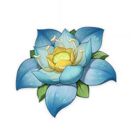

Materials
Kalpalata Lotus
Kalpalata Lotus
Flowers from vines that grow on cliff sides. It is called a lotus only because it has a similar appearance to one. Aside from that, it bears no other similar properties to the lotus.
Guide:
Sources:
Used by character ascensions:


Description:
Flowers from vines that grow on cliff sides. It is called a lotus only because it has a similar appearance to one. Aside from that, it bears no other similar properties to the lotus.
Vines grow along cliffs everywhere in Sumeru, as timeless as time itself. It is said that these vines were the first thing that Lord Rukkhadevata ever created, making them the progenitors of every plant in Sumeru. All the great plants of the land, even the undying Divine Tree, are connected at the roots through the entanglement of these vines. Of course, this saying has long been refuted by Amurta researchers, but still, it persists amongst the people.